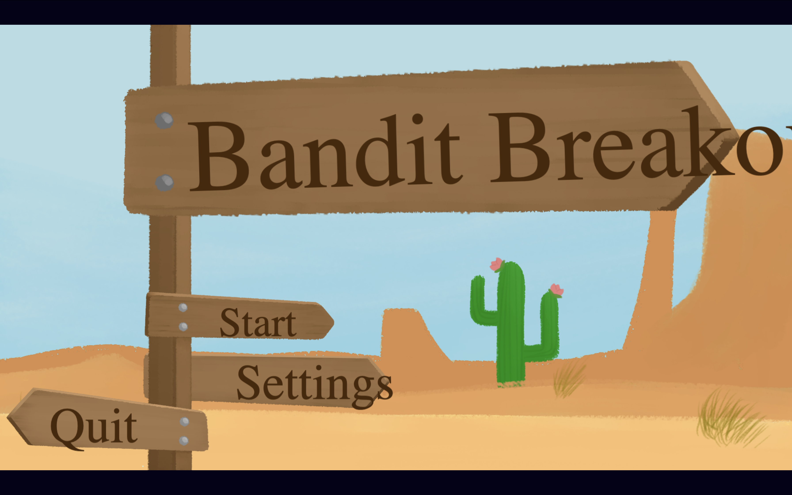
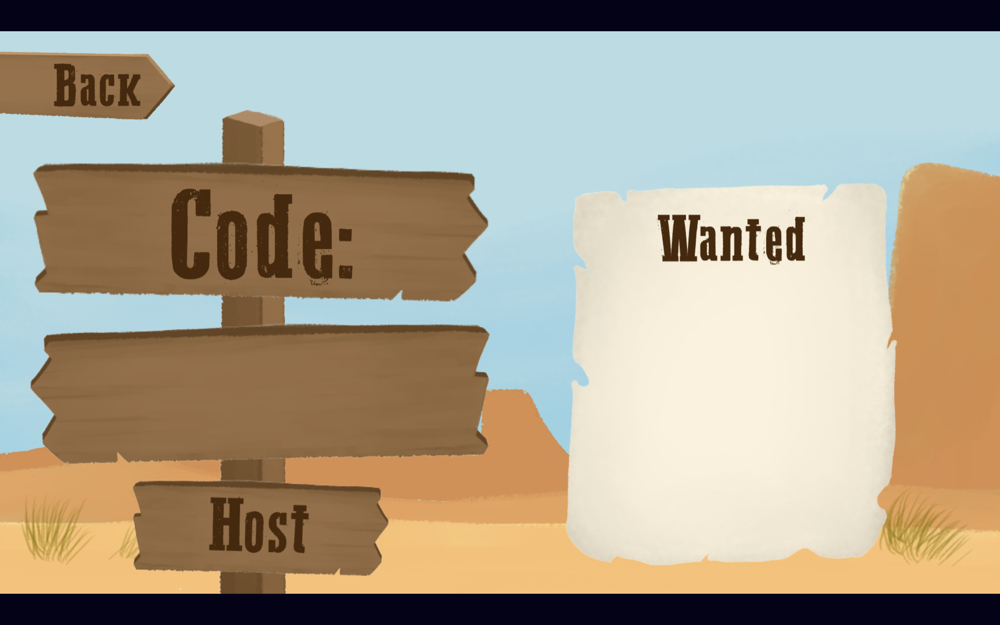

Bandit Breakout is a realtime multiplayer browser game developed within a one-month academic project window. The case study documents the research phase, the stack pivot away from a React and Next.js direction, the shift to Phaser, and the delivery of a working host-and-join gameplay experience backed by Socket.IO, Express, MongoDB, GridFS, and Redis.
Bandit Breakout
Case study of a large school project covering research, technical direction, gameplay systems, realtime synchronization, asset delivery, and final deployment.

Project Overview
This case study focuses on the project background, the central challenge, the process used to reach a workable direction, and the technical systems that turned the idea into a live multiplayer build.
Why this project counts as a large case study
Bandit Breakout required more than a single polished screen or a final video demo. The project demanded early research, stack comparison, gameplay planning, multiplayer architecture, interface implementation, asset handling, server logic, and final deployment. The result was not only a playable game, but also a complete record of how the project direction evolved.
The project combined several layers of work: front-end scene construction in Phaser, backend services in Express, realtime event handling through Socket.IO, and a content pipeline capable of serving game assets from MongoDB and GridFS with Redis helping reduce load delays.
What the final build needed to achieve
- Present a complete game loop instead of a disconnected prototype scene.
- Allow one player to host a lobby and others to join through a short room code.
- Keep all players synchronized during turns, movement, path choices, and battles.
- Deliver a visually readable board experience with character selection, map movement, and battle feedback.
- Deploy a working live demo within the class timeline.
Challenge and Constraints
The central challenge was not only building the game, but choosing a stack that could support the idea within a short schedule.
React and Next.js were the first research path
Early exploration covered several modern web stacks, with React and Next.js treated as the strongest initial option. The attraction was clear: both tools offer strong component structure, a large ecosystem, and familiar front-end patterns. For a content-heavy app or dashboard, that choice would likely have remained the leading direction.
However, Bandit Breakout was not primarily a document-based or route-based product. The core problem centered on a realtime game board, active scene updates, character movement, turn sequencing, and responsive multiplayer feedback.
The one-month schedule forced a practical pivot
Once scope and timeline were reviewed together, React and Next.js began to look expensive for this specific project. A large amount of effort would have gone into application scaffolding, game-state plumbing, custom rendering structure, and animation workflow before the actual multiplayer board experience could mature.
Phaser offered a more direct route. It aligned with scene-based gameplay, sprite positioning, board interactions, and rapid iteration. The stack pivot was therefore a production decision shaped by time, not a rejection of React itself.
Process Breakdown
The project moved through a clear beginning, middle, and end: research, stack pivot, then feature delivery and deployment.
Research and stack comparison
- Reviewed multiple front-end directions before production work accelerated.
- Evaluated React and Next.js as the first serious path because both were current, flexible, and widely supported.
- Compared that route against the actual project requirement: a scene-heavy multiplayer game rather than a page-heavy app.
Production pivot and scope control
- Shifted the implementation strategy toward Phaser so the team could prioritize gameplay iteration earlier.
- Reduced framework overhead and focused the project on lobbies, player turns, movement, and battles.
- Matched technical choices to the one-month delivery window instead of chasing a broader web-app architecture.
Build, refine, and ship
- Implemented gameplay scenes, Socket.IO events, synchronized movement, and dice-driven battle triggers.
- Built asset-serving support around MongoDB, GridFS, and Redis so the demo could load more reliably.
- Validated the build through playtest capture and delivered a live deployed version.
Research defined the first direction
The opening phase centered on finding a suitable stack for the project. React and Next.js were explored because both frameworks support structured component design and modern front-end development well. At this stage, the project still had room to become a more app-like experience.
Phaser was selected to protect delivery speed
Once the schedule became a stronger constraint, the project direction narrowed. Phaser fit the board-game format better, especially for visual movement, scene management, and immediate gameplay feedback. The middle phase therefore became a pivot from framework exploration to game-specific implementation.
The final stage focused on sync, polish, and deployment
The later phase concentrated on features that made the experience feel complete: room hosting, joining by code, board movement, path branching, battle events, and live demo deployment. The end result was a usable multiplayer build, not just a concept document.
Process Evidence
Existing project media helps show the transition from concept to a more complete game loop with lobby flow and board interaction.


Gameplay Concept
Rather than functioning as a static board mockup, the project aimed to support a complete multiplayer loop from lobby creation to final battle.
How the experience is structured
- A host creates a room and receives a six-character game code.
- Additional players join the same match through the code-based lobby flow.
- Players select characters before the match begins.
- Turns are advanced in order, with dice rolls driving board movement.
- Fork tiles can interrupt movement and request an explicit route choice.
- Tile collisions trigger battles, while the final board space leads to a boss encounter.
Why this loop mattered to the case study
The gameplay loop created a useful frame for every technical decision. Lobby events had to feel fast enough to support group play. Movement logic had to remain authoritative across connected clients. Branching path choices required state pauses and resumptions. Battles had to read as game events rather than disconnected calculations.
Because the loop was clear, the project could be evaluated as a process: each system either supported the loop successfully or exposed where more work was needed.
Solution
The final solution combined a game-oriented client stack with a realtime Node backend and a practical asset-serving strategy.
Phaser became the right delivery tool
- Phaser scenes organized the menus, lobby, map, and battle experiences in a way that matched the project structure naturally.
- TypeScript supported clearer gameplay logic and scene coordination.
- Vite handled local development and building without adding much friction to the workflow.
- Scene-based rendering reduced the need to invent custom game abstractions on top of a more general web-app framework.
Realtime game services supported multiplayer state
- Express and Socket.IO provided the multiplayer communication layer.
- Room creation and room joining were handled through code-based lobby events.
- The server emitted shared state snapshots so every client could stay aligned.
- Turn advancement, path choice prompts, and battle triggers were coordinated from the server side.
Multiplayer consistency required clear event design
hostLobby,joinLobby, andstartGamesupported the room flow.gameStatesnapshots were used to keep clients synchronized.movePlayerDiceRollinitiated server-authoritative board movement.pathChoiceRequiredandchoosePathhandled branch decisions during movement.battleStartedand turn events provided gameplay feedback after collisions and combat triggers.
Serving game assets needed a scalable but practical approach
- Small assets were served through MongoDB-backed storage where direct document delivery was appropriate.
- Larger files were streamed from GridFS when regular document delivery was not ideal.
- Redis preload of key assets reduced repeated loading delays and improved responsiveness for critical files.
- The asset route created a more manageable content pipeline for the deployed demo.
System overview
Browser (Phaser 3)
|
| room actions + gameplay events
v
Socket.IO client
|
v
Node / Express + Socket.IO
- host and join lobby
- start match
- move players by dice roll
- pause for fork choices
- trigger battles
- emit gameState snapshots
|
+-> Redis preload and cache
|
+-> MongoDB document storage
|
+-> GridFS streaming for large assetsWhy the solution fit the project better than the original idea
The final architecture stayed close to the real problem. Phaser handled scenes and spatial interaction. Socket.IO handled immediate multiplayer communication. Express provided a dependable HTTP and websocket foundation. MongoDB, GridFS, and Redis supported the content side of the demo. Every major part of the solution answered a visible gameplay need.
That direct alignment is what made the stack pivot successful. The project stopped trying to behave like a general-purpose app and instead became a game platform with supporting services.
Role Contributions
The implementation role covered systems that were central to both the player experience and the technical stability of the build.
- Board-state synchronization: contributed to keeping all connected players aligned through server snapshots and event-driven updates.
- Movement logic: implemented dice-based traversal on the board, including interruptions at route forks and continuation after player choice.
- Dice interactions: supported the core dice-driven pattern behind movement and battle events.
- Realtime feedback: helped the game communicate progression through movement, turn advancement, and battle-trigger events.
- Asset pipeline: supported a split storage strategy using MongoDB for smaller files and GridFS for larger files.
- Redis preload: helped improve access to critical assets during startup and repeated requests.
- Deployment validation: supported delivery of the live demo so the project could be reviewed as a functioning web-based game.
- Stack direction: contributed to the decision to prioritize Phaser once the time-cost of a React and Next.js route became clear.
Outcome and Reflection
The final deliverable demonstrates both a completed build and a documented decision-making process.
What the project delivered
- A live multiplayer demo that could be hosted and joined through a short room code.
- A complete board-game loop with turns, movement, route choices, collisions, and battle states.
- A technical foundation covering gameplay scenes, websocket events, backend services, and asset delivery.
- A stronger understanding of how stack choice affects schedule, iteration speed, and project scope.
What the case study shows most clearly
- Modern stacks are valuable, but the best choice depends on the product shape and available time.
- Research was still useful even though the first direction was not the final one.
- Phaser reduced implementation friction and allowed the project to emphasize gameplay over framework setup.
- The strongest result was not perfection in every feature, but the delivery of a working multiplayer experience supported by a clear process story.
Areas that would benefit from a longer timeline
- Expanded playtesting and usability review across a wider set of players.
- Additional balancing for battle pacing, event frequency, and progression flow.
- More polished interface layers for tutorials, onboarding, and end-of-match feedback.
- Further refinement of backend persistence and operational tooling for long-term multiplayer sessions.